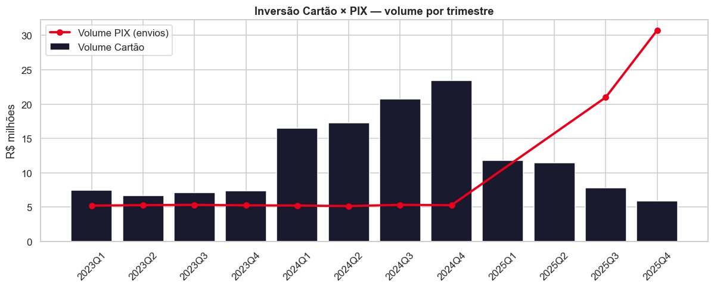
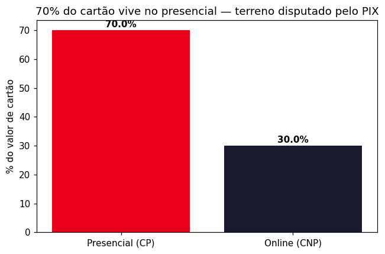
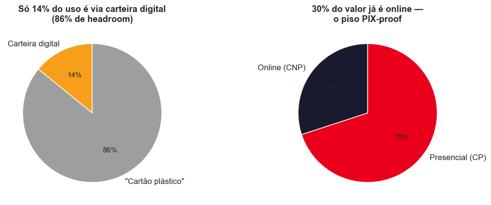
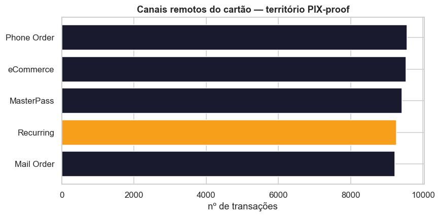
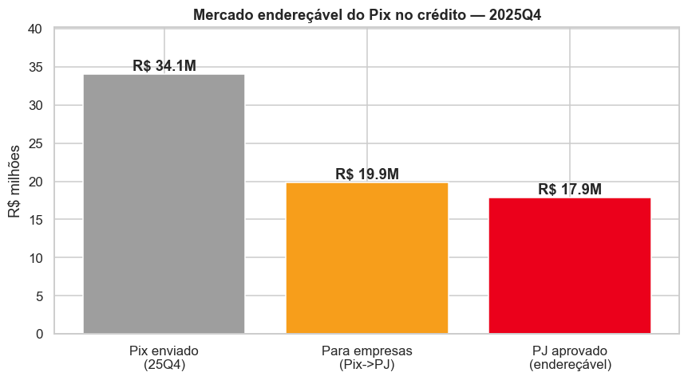
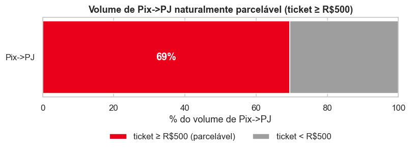
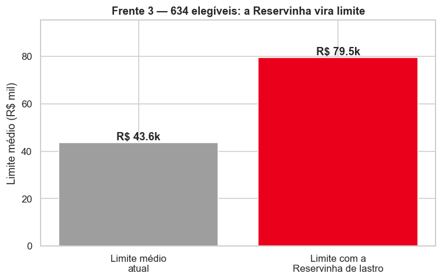
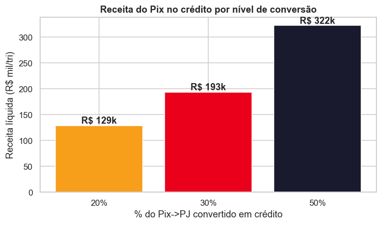

Um motor que reinveste o dinheiro do cliente e reage à perda de share — somado a dois produtos que crescem o cartão onde o PIX não chega e melhoram o PIX no crédito onde ele já está.
O Priceless Bank perdeu 14 p.p. de market share em quatro trimestres. O valor migrou para o PIX cego — um canal sem intercâmbio e sem dado — e, em paralelo, a base esfriou (cartões vencidos, inativos, desinvestimento recorde).
Motor (Autopilot): o cérebro que gerencia o pagamento e reinveste todo o saldo do cliente (Saldo Vivo). É a reação imediata à queda — mostra o Priceless retomando o controle do fluxo.
Sobre o motor, dois produtos: Cartão Digital (crescer onde o PIX, por desenho, não entra) e PIX no Crédito melhorado (capturar o fluxo onde o PIX já venceu).
Não brigamos pelo balcão que o PIX já dominou. O motor recupera o que vaza, o Cartão Digital cresce no território PIX-proof (online, internacional, recorrência) e o PIX no Crédito monetiza o próprio fluxo do PIX — com cashback que vira investimento.
Em 2025, o Priceless Bank passou de 33% para 19% de market share em valor transacionado, enquanto a LuminaPay quase dobrou (17% → 30%) e a Aurora Bank cresceu de 8% para 14%.
| Player | 25 Q1 | 25 Q2 | 25 Q3 | 25 Q4 | Δ |
|---|---|---|---|---|---|
| Priceless Bank | 33% | 28% | 23% | 19% | −14 p.p. |
| LuminaPay | 17% | 23% | 28% | 30% | +13 p.p. |
| Papaya Bank | 33% | 31% | 30% | 28% | −5 p.p. |
| Aurora Bank | 8% | 9% | 11% | 14% | +6 p.p. |
| Lux Bank | 6% | 7% | 8% | 9% | +3 p.p. |
🔴 Achado crítico: o volume de cartão caiu 50% ao longo de 2025 (R$ 11,8 M → R$ 5,9 M) — contra o pico de 24Q4 a queda em valor chega a 75%, mas o ticket de 2024 é artefato dos dados (em quantidade, −36%) — enquanto o PIX explodiu. Em 25Q4, o PIX→PJ aprovado (R$ 17,9 M) supera o volume total de cartão em 3,0×. O consumo não diminuiu — mudou de trilho.

| Sintoma | Evidência nos dados | Urgência |
|---|---|---|
| Churn silencioso (PIX) | Cartão −50% em 2025, PIX→PJ aprovado +446%; PIX→PJ = 3,0× o cartão | 🔴 Crítica |
| Cartões nunca usados | 469 cartões (11,7%) emitidos e nunca transacionados | 🟠 Alta |
| Cartões vencidos | 1.018 cartões expirados sem renovação (56% premium) | 🟠 Estrutural |
| Inatividade & contas-fantasma | 87 sem atividade em 2025 — 85 deles sem qualquer atividade histórica (contas-fantasma) | 🔴 Alta |
| Base envelhecida, captação seca | Idade média 49,5; jovens 18-29 = 5,9%; só 189 contas novas em 2025 | 🟡 Estrutural |
A arquitetura tem três camadas. Primeiro o motor, que estanca a sangria e mostra o banco reagindo. Sobre ele, dois produtos que atacam os dois lados da inversão: crescer o cartão onde o PIX não alcança, e capturar o fluxo onde o PIX já venceu.
O cérebro que escolhe a melhor trilha de pagamento e mantém 100% do saldo do cliente rendendo até o último segundo. É a resposta imediata à queda: recupera o fluxo que vazava como PIX cego (dado + intercâmbio + AUM) e prova que o Priceless retomou o controle.
Parar de brigar pelo presencial (que o PIX venceu) e dominar o território PIX-proof: online, internacional, recorrência e carteira digital. A maior alavanca está parada na mesa — só 14% de adoção de carteira digital, 86% de headroom.
Monetizar o próprio fluxo do PIX→PJ (R$ 17,9 M/tri endereçável) com cashback progressivo que vira investimento, onboarding jovem digital e a Reservinha como âncora de limite. 998 clientes já estão prontos (têm crédito ativo e mandam PIX→PJ).
O motor transforma o celular do cliente na carteira inteligente do Priceless: ele paga uma vez (Apple/Google Pay ou app) e o banco escolhe a melhor forma de pagar, mantém o dinheiro rendendo até o último segundo e recompensa cada gasto. Sem maquininha nova — sobre os trilhos que já existem.
A cada compra escolhe a melhor trilha em milissegundos: à vista que rende (débito/Saldo Vivo), crédito à vista (mais cashback + intercâmbio, sem dívida) ou parcelado (se o cliente quiser). Migra suavemente o à-vista-PIX (intercâmbio zero) para o crédito à vista (intercâmbio recuperado) — sem forçar nada.
A conta corrente parada deixa de existir: 100% do saldo fica rendendo (liquidez diária, FGC) e cada pagamento dispara um resgate automático no último segundo. Estanca a fuga de AUM na raiz (resgate recorde de R$ 1.632k em 25Q4) e transforma todo o saldo em AUM com spread recorrente — receita que o banco não tinha.
Mede a concentração da vida financeira no banco e destrava cashback/perks escalonados. O dinheiro do cashback vem do próprio intercâmbio recuperado. Quanto mais o cliente concentra → mais o banco fatura → mais cashback volta → mais ele concentra. Um ciclo que se paga sozinho.
Tese: parar de brigar pelo pagamento que o PIX já venceu (presencial, miúdo, doméstico) e crescer o cartão onde o PIX, por desenho, não entra — online, recorrência, internacional e carteira digital.
70% do valor de cartão vive no presencial — exatamente o terreno que o PIX está comendo. Reconverter o balcão é correr atrás do prejuízo: o custo de aceitação do PIX é ~zero para o lojista, e a migração é transversal a todas as idades (~60% do PIX vai para PJ em qualquer faixa).

| Território PIX-proof | Por que o PIX não entra |
|---|---|
| Internacional (crossborder) | PIX é só BRL / doméstico |
| E-commerce / online (CNP) | checkout tokenizado, compra em 1 clique |
| Recorrência / assinaturas | cobrança automática agendada (card-on-file) |
| Proteção ao comprador | PIX é irreversível, sem chargeback |


| Alavanca | Como vence o PIX no online | Âncora no dado |
|---|---|---|
| Tokenização / 1-clique | menos atrito que escanear QR; vira o default do checkout | wallet só 14% → 86% headroom |
| Cartão virtual + controles | tira o medo de fraude — CNP é onde a fraude mora | CNP = 30% do volume |
| Recorrência / assinaturas | card-on-file é o padrão; PIX Automático é nascente | 9.262 recorrentes já existem |
| Internacional | PIX simplesmente não existe fora do Brasil | base 54% Platinum+Black |
| Cashback por canal | mais alto em online/internacional/recorrência | financiado pelo intercâmbio do CNP |
O LuminaPay tem "PIX no crédito" e foi o principal vetor da nossa perda. Nossa versão é melhorada: não é só parcelar um PIX — é um produto que transforma cada PIX→PJ em cashback que vira investimento, capta o público jovem e usa a Reservinha como âncora de limite. Ponto de desenho essencial: o PIX é a interface, mas a liquidação acontece como transação de crédito nos trilhos do cartão — é isso que devolve o intercâmbio (os 1,8% do modelo) e o dado ao banco, em vez de acelerar o trilho que os drena.


Quanto mais o cliente usa o PIX no crédito, maior o cashback: 1% → 2% → 3%. E o cashback cai automaticamente na Reservinha — criando hábito de investimento desde o primeiro PIX, sem esforço.
Conta jovem com abertura 100% digital (CPF + selfie) e PIX no crédito ativado no dia 1. Ataca a maior lacuna da base — jovens são só 5,9% — justamente o público que mais adota o digital e que mais movimenta PIX→PJ por cliente.
O loop que prende: cashback → Reservinha → limite de PIX ampliado. Quanto mais o cliente usa, mais saldo acumula, mais limite ganha. Saldo investido vira lastro de crédito — perder o relacionamento significa perder o limite.

A inversão cartão→PIX custa ≈ R$ 1,51 M/ano (R$ 216k do colapso do cartão + R$ 1,29 M de intercâmbio que evapora no PIX→PJ — os R$ 17,9 M aprovados em 25Q4, anualizados à taxa de crédito de 1,8%). Baseline transparente: a parcela do cartão usa 2024Q4 em quantidade; com 2023Q4, cai para ~R$ 89k/ano. A plataforma é grátis para o cliente; a receita-core vem de intercâmbio recuperado, spread sobre AUM (Saldo Vivo) e juros/IOF do parcelado.
| Fonte (núcleo gratuito) — receita incremental / ano | Pessimista | Neutro | Otimista |
|---|---|---|---|
| Intercâmbio recuperado | R$ 96,7k | R$ 290,2k | R$ 544,9k |
| Spread sobre AUM (Saldo Vivo) | R$ 35,3k | R$ 185,2k | R$ 614,7k |
| Juros/IOF parcelado (PIX no crédito) | R$ 10,7k | R$ 80,6k | R$ 272,5k |
| CORE (grátis) / ano | R$ 143k | R$ 556k | R$ 1,43M |
| % da perda reposta (só o core) | 9% | 37% | 95% |

Provisionar a carteira tokenizada (Apple/Google Pay); lançar o Saldo Vivo (estanca a fuga de AUM); Autopilot v1 e Score v1. KPIs: adoção de carteira · PIX→PJ retido · queda nos resgates.
Tokenização/1-clique, cartão virtual, central de recorrência e cashback por canal; reativação dos 469 cartões parados e renovação proativa. KPIs: adoção de carteira · % CNP · cartões ativos por cliente.
Cashback progressivo→Reservinha, onboarding jovem digital e Reservinha como âncora de limite; captação do público 18-29. KPIs: PIX→PJ convertido · novos clientes jovens · AUM na Reservinha · NPS (mirar Lux = 82).
| KPI | Partida (25Q4) | Meta |
|---|---|---|
| Market share (valor) | 19% | 30% |
| Adoção carteira digital | ~14% | >70% |
| Intercâmbio / tri | ~R$ 95k | R$ 322k+ |
| Clientes 18-29 | 5,9% | 18% |
| NPS | ? (medir) | 72 |
| Risco | Mitigação |
|---|---|
| Adoção trava | Opt-in com capital preservado + FGC |
| Concorrente copia | Barreira é o ciclo dado+AUM+Score acumulado |
| Risco de crédito (PIX) | Frente 3: limite lastreado na Reservinha |
| Empurrar cartões sem uso | Métrica é cartão ativo, não emitido |
Fontes: análise exploratória da base Priceless Bank (1.960 clientes · 156.826 transações · 278.940 PIX · 21.200 investimentos), notebooks/main.ipynb · Benchmarking Mastercard Challenge 2026 · BACEN — Regulamentação Pix Parcelado (nov/2025). Intercâmbio: 1,8% crédito / 0,6% débito (teto BACEN). Universo Pix: envios aprovados (Aprovado=1).
Priceless Bank · Mastercard Challenge 2026 · Inteli — Junho 2026 · Documento de uso interno
Diagnóstico: docs/analise-exploratoria.md · Solução: docs/proposta-solucao.md · Plano de ação: docs/plano-de-acao.md